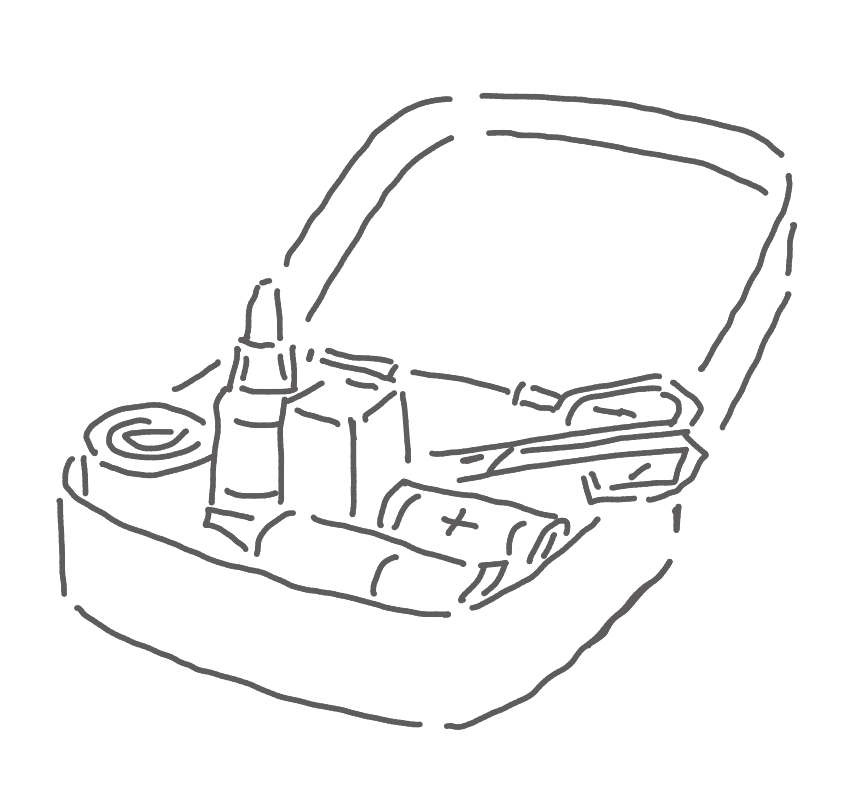

You slowly approach the creature and try to make yourself as least threatening as possible. The creature doesn’t move and keeps its eyes on you.
You notice a sizable laceration on the creature’s leg. You bend down and try to take a look at it.
The creature continues to be suspiciously calm, which encourages you to assess its leg.
After determining the injury is not too deep or severe, you get up and retrieve a first aid kit from your kitchen.

While looking at your old wired home phone that has been covered in even more dust by tonight’s disturbance, reality starts to set in.
You wonder, “Who do I even call to help me out with this?” You let out a deep sigh, and return yourself to the problem at hand – the injured creature.